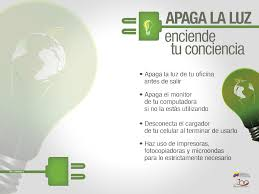

1.- Separa la basura: En un bote coloca los restos de comida (esto es la basura orgánica), y en otro deposita el cartón, vidrio, papel y plástico que ya no necesitas.
2.- Lleva tus propias bolsas: Seguramente tienes bolsas de tela en casa, cuando vayas al supermercado evita las bolsas de plástico pues éstas tardan en degradarse 150 años.
3.- Consume la menor cantidad de productos desechables: Productos como los trastes de plástico y unicel generan una gran cantidad de basura.

4.- Prefiere las pilas recargables en vez de las communes: Así evitarás estar comprando y desechando baterías, además las pilas son muy dañinas y contaminan el agua.
5.- Modera el uso de pañuelos faciales: Mientras menos pañuelos, servilletas y papel de baño uses, estarás generando menos basura.
6.- Apaga las luces y aparatos eléctricos que no estés utilizando.

7.- En cuanto al cuidado de agua, si lavas los trastes, cierra el grifo mientras los enjabonas, de igual manera cierra la llave de la regadera cuando te talles y cuando te laves los dientes sólo necesitas un vaso con agua para enjuagarte.
8.- Si riegas el jardín, procura hacerlo ya avanzada la tarde, ya que con esto evitarás que el sol evapore parte del agua que debe de llegar a las plantas.
9.- Existen electrodomésticos ecotec, que tienen como principal objetivo detectar fugas y economizan electricidad y agua.
10.- No arrojes basura a la calle, deposítala en un bote de basura y si no encuentras ninguno por tu paso, guárdala en tu bolsa o mochila y espera a tirarla en casa.
11.- Si te trasladarás a un lugar cercano opta por caminar o ir en bici, de igual forma para ir al trabajo ponte de acuerdo con compañeros que vivan cerca de tu casa, y compartan auto, ayudarán a reducir los efectos del CO2.
12.- Respeta las áreas verdes, jardines y parque públicos, no los dañes, no arrojes basura y si vas a pasear a tu mascota recoge sus heces fecales.